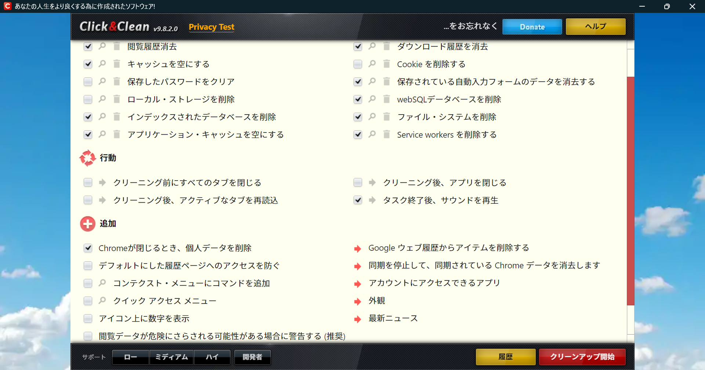

MyPCのセッティング
自分のPCを初期化して再設定しようと思ったので、そのときのメモ。基本的には研究のPCも同じだろう。
参考にした記事は以下のとおり。初期化自体のやり方はここには書かない。
アプリケーション
引き継ぎたいソフトは以下のとおり。
- Microsoft Edge, Chrome
- Visual Studio Code
- Zotero
- LINE, Discord, Slack
- Google Drive
- GitHub
- (Copilot) Windows11からデフォルトで入っている。
- Quick Share
- Bing Wallpaper
- Zoom
- VLC media player
- (Box)
- (Microsoft Office)
以上は、仕事のPCでも共通。LaTeXやPython, C/C++などはここでは言及しない。
また、UbuntuもMicrosoft Storeでインストールしないように注意すること。コマンドプロンプトからやる。
以下はMyPC用のソフト。
- TubeBrowser (UWP)
- 7-zip
- StreamFab
- ffmpeg
- yt-dlp
- Mp3Tag
引継ぎ
まずは初期化の前に必要な手続き。重要なファイルはバックアップを取るのは言わずもがななので、それ以外でやるべきことを残しておく。
TuneBrowser
TuneBrowserライセンス版のPC変更時の対応
どうやら、ライセンス関連で必要な手続きはないらしい。Microsoft Storeを通していたからなのだとか。
プレイリストは、次の手順でバックアップをとることができる。
- Musicフォルダにm3u8ファイルを生成。
- 起動したときにそれをドラッグ。
StreamFab
こっちは少しだけ手間がある。
ここにあるとおり、まずは認証の取り消しをして、再度インストール先で認証をしなくてはならない。自分の場合は、ocojo***のアカウントでパスワードはGoe***である。
初期化後の設定
初期化後の設定。デスクトップが出るまでは、無難にこなしておく。
-
OneDriveは使わない。アンインストールして、徹底的に消しておこう。
-
このとき、UserフォルダにOneDriveのフォルダが残ってしまい、デスクトップなどがリンクされている。よくわかっていないが、普通に切り取りで対処しても問題なさそう。
-
デスクトップの「表示」の設定は「アイコンの自動整列」、「アイコンを等間隔に整列」をどちらもオン。
-
「設定」->「テーマ」->「デスクトップ アイコンの設定」でデスクトップにPCやユーザーのフォルダをおける。(参考)
- Microsoft Storeでインストールしておくべきもの
- Visual Studio Code (Ubuntuはコマンドプロンプトから手動で。)
- LINE, Discord, Slack
- Zoom
- TubeBrowser (UWP)
- Mp3Tag
「Quick Share」をMicrosoft Storeからインストールすると、サムスンのスマホしか共有できなくなるので注意。「Quick Share」はここからダウンロード&インストールするとよい。

Windowsの設定
- まず何よりも、テーマをブラックにする。あと、色の選び方なども自動にしておく。
-
Windowsのアップデートもしておくこと。
-
(「システムの詳細設定の表示」を検索して、そこから視覚オプションをいじってもよいかもしれない。)
-
検索から「フォント」(もとはコントロールパネルにある)を開く。"Ricty Diminished"をドラッグで追加する。
-
個人的にナイトライトが気に入っているので、それをオンにしてもよいかもしれない。
-
自動再生はオフにしておいてよいかもしれない。SDカードを入れっぱなしにしていると、起動したときにいつも再生されて少しめんどくさい。
エクスプローラー
Microsoft IME
-
入力履歴は使わないようにする。予測変換と変換の2つの項目があるので注意。
-
使えるならクラウド辞書も使いたい。
-
スペースの半角をいじる。「スペース」->「常に半角」で。
Bing Wallpaper
LINE, Discord, Slack
-
こいつらは、Microsoft Storeからダウンロードできた。
-
Discord, Slackはスタートアップしないようにしておく。
Microsoft Edge, Chrome
-
まずはEdgeからもちろん登録。ログインはitsuki.miyaneでやる。
-
そして、Chromeのexeファイルをここからダウンロードする。
-
基本的にGmailの/u/0はocojo.iki、/u/1はitsuki.miyaneでそこからは、その他。
TubeBrowser
-
Microsoft Storeからインストールする。
-
「ヘルプ」->「バージョン情報」を開いて、ライセンスが登録されているか確認する。
-
とりあえず、ツリークエリをいじる。例えば、
%ALBUM ARTIST%\%YEAR%\%ALBUM%とすると、「アルバムアーティスト->年->アルバム」の順になる。
-
さらに、
$IF(%ALBUM ARTIST%,%ALBUM ARTIST%,)とすると、%ALBUM ARTIST%が空欄のものを排除できる。だから、$IF(%ALBUM ARTIST%,%ALBUM ARTIST%,)\%YEAR%\%ALBUM%とするとよさそう。
-
ライブラリービューの仕切りが邪魔なときは、タブを右クリックして「タブ(Album View)の設定」から「インデックスカードを入れる」のところをいじる。さらに、ライブラリービューの背景が欲しいなら
-
「有効」->「Yes」
-
「画像の表示」->「先頭」
-
「クエリ文字/画像のパス」->「」(空欄にする)
-
「透明度」->「0.2」(くらい。お好みで)
がよさそう。
-
プレイヤーの背景をいじりたいときは、右上のほうにあるボタンをいじる必要がある。プレイヤーの右上のほうに3つのボタンがあり、一番左端が「Active Backgroundの表示」というものなので、これを押すとよい。
WSL
-
PowerShellを管理者で実行して、
wsl --installをするとWSLが使えるようになる。あとはどこかにメモを取った手順で、Ubuntuを入れる。
-
sudo apt-get updateをとりあえず実行しておくこと。これで、apt-getが使えるようになる。
Chromeの拡張機能

yt-dlp
YouTubeから動画をダウンロードするためのツール。便利なのでダウンロードする。
どうやら、Pythonのスクリプトで動いているらしい。そのため、Pythonをインストールしておく必要がある、が多分デフォルトで入ってるので大丈夫だろう。
参考
yt-dlpのインストール
-
mkdir -p ~/.local/binで~/.local/binを作成。
-
cd ~/.local/binで移動して、source .profileを実行してPATH変数に加える。
-
wget https://github.com/yt-dlp/yt-dlp/releases/latest/download/yt-dlp -O ~/.local/bin/yt-dlpでインストール。chmod +x ~/.local/bin/yt-dlpで実行できるように。
-
yt-dlp --versionでちゃんと動くか確認する。yt-dlp -Uでアップデートもできる。
-
(たぶん入っているだろうが、念のため
sudo apt install ffmpegでffmpegもインストールしておく。)
これでおそらく使うことができる。
CookieをWindowsのChromeからインポート
これは簡単。Chromeの拡張機能の「Get cookies.txt
LOCALLY」でcookies.txtを取り出す。それをUbuntuの実行ファイル上にコピーする。今回は~/yt-dlp/で実行することにするので、そこにコピーする。あとは、オプションに--cookies ~/yt-dlp/cookies.txtをつけるだけ。